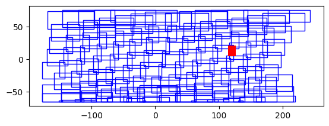

stem = 'SVDNB_npp_d20180501_t0004098_e0009502_b33718_c20180501060951522600_noac_ops'Fetch Coords
Utilities to fetch json file containing coordinates metadata
get_coords
get_coords (href, stem)
href = 'https://globalnightlight.s3.amazonaws.com/npp_201805/SVDNB_npp_d20180501_t0004098_e0009502_b33718_c20180501060951522600_noac_ops.rade9.co.json'row = get_coords(href,stem)CPU times: user 41.9 ms, sys: 0 ns, total: 41.9 ms
Wall time: 1.27 srow{'stem': 'SVDNB_npp_d20180501_t0004098_e0009502_b33718_c20180501060951522600_noac_ops',
'asset_href': 'https://globalnightlight.s3.amazonaws.com/npp_201805/SVDNB_npp_d20180501_t0004098_e0009502_b33718_c20180501060951522600_noac_ops.rade9.co.tif',
'geometry': <shapely.geometry.polygon.Polygon>}date_param = '20180501'if '%' in date_param:
query = f'select * from catalog_items where start_date like "{date_param}"'
else:
query = f'select * from catalog_items where start_date = "{date_param}"'conn = sql3.connect(DB)items_df = pd.read_sql_query(query,conn,dtype=str)CPU times: user 719 ms, sys: 791 ms, total: 1.51 s
Wall time: 10.2 sitems_df.columns.valuesarray(['href', 'item_href', 'stem', 'suffix', 'base_url', 'folder',
'product_id', 'start_date', 'first_scantime', 'end_scantime',
'orbital_nbr', 'create_datetime', 'data_origin', 'data_domain',
'vflag_file', 'vflag_href'], dtype=object)items_df.head()| href | item_href | stem | suffix | base_url | folder | product_id | start_date | first_scantime | end_scantime | orbital_nbr | create_datetime | data_origin | data_domain | vflag_file | vflag_href | |
|---|---|---|---|---|---|---|---|---|---|---|---|---|---|---|---|---|
| 0 | ./SVDNB_npp_d20180501_t0004098_e0009502_b33718_c20180501060951522600_noac_ops.rade9.co.json | https://globalnightlight.s3.amazonaws.com/npp_201805/SVDNB_npp_d20180501_t0004098_e0009502_b33718_c20180501060951522... | SVDNB_npp_d20180501_t0004098_e0009502_b33718_c20180501060951522600_noac_ops | rade9.co.json | https://globalnightlight.s3.amazonaws.com | npp_201805 | SVDNB_npp | 20180501 | 0004098 | 0009502 | 33718 | 20180501060951522600 | noac | ops | npp_d20180501_t0004098_e0009502_b33718.vflag.co.tif | https://globalnightlight.s3.amazonaws.com/npp_201805/npp_d20180501_t0004098_e0009502_b33718.vflag.co.tif |
| 1 | ./SVDNB_npp_d20180501_t0009514_e0015318_b33718_c20180501061532603366_noac_ops.rade9.co.json | https://globalnightlight.s3.amazonaws.com/npp_201805/SVDNB_npp_d20180501_t0009514_e0015318_b33718_c20180501061532603... | SVDNB_npp_d20180501_t0009514_e0015318_b33718_c20180501061532603366_noac_ops | rade9.co.json | https://globalnightlight.s3.amazonaws.com | npp_201805 | SVDNB_npp | 20180501 | 0009514 | 0015318 | 33718 | 20180501061532603366 | noac | ops | npp_d20180501_t0009514_e0015318_b33718.vflag.co.tif | https://globalnightlight.s3.amazonaws.com/npp_201805/npp_d20180501_t0009514_e0015318_b33718.vflag.co.tif |
| 2 | ./SVDNB_npp_d20180501_t0112274_e0118078_b33719_c20180501071808369542_noac_ops.rade9.co.json | https://globalnightlight.s3.amazonaws.com/npp_201805/SVDNB_npp_d20180501_t0112274_e0118078_b33719_c20180501071808369... | SVDNB_npp_d20180501_t0112274_e0118078_b33719_c20180501071808369542_noac_ops | rade9.co.json | https://globalnightlight.s3.amazonaws.com | npp_201805 | SVDNB_npp | 20180501 | 0112274 | 0118078 | 33719 | 20180501071808369542 | noac | ops | npp_d20180501_t0112274_e0118078_b33719.vflag.co.tif | https://globalnightlight.s3.amazonaws.com/npp_201805/npp_d20180501_t0112274_e0118078_b33719.vflag.co.tif |
| 3 | ./SVDNB_npp_d20180501_t0118090_e0123494_b33719_c20180501072349439701_noac_ops.rade9.co.json | https://globalnightlight.s3.amazonaws.com/npp_201805/SVDNB_npp_d20180501_t0118090_e0123494_b33719_c20180501072349439... | SVDNB_npp_d20180501_t0118090_e0123494_b33719_c20180501072349439701_noac_ops | rade9.co.json | https://globalnightlight.s3.amazonaws.com | npp_201805 | SVDNB_npp | 20180501 | 0118090 | 0123494 | 33719 | 20180501072349439701 | noac | ops | npp_d20180501_t0118090_e0123494_b33719.vflag.co.tif | https://globalnightlight.s3.amazonaws.com/npp_201805/npp_d20180501_t0118090_e0123494_b33719.vflag.co.tif |
| 4 | ./SVDNB_npp_d20180501_t0123507_e0129293_b33719_c20180501072930507231_noac_ops.rade9.co.json | https://globalnightlight.s3.amazonaws.com/npp_201805/SVDNB_npp_d20180501_t0123507_e0129293_b33719_c20180501072930507... | SVDNB_npp_d20180501_t0123507_e0129293_b33719_c20180501072930507231_noac_ops | rade9.co.json | https://globalnightlight.s3.amazonaws.com | npp_201805 | SVDNB_npp | 20180501 | 0123507 | 0129293 | 33719 | 20180501072930507231 | noac | ops | npp_d20180501_t0123507_e0129293_b33719.vflag.co.tif | https://globalnightlight.s3.amazonaws.com/npp_201805/npp_d20180501_t0123507_e0129293_b33719.vflag.co.tif |
get_rows
get_rows (items_df)
rows = get_rows(items_df)CPU times: user 4.06 s, sys: 0 ns, total: 4.06 s
Wall time: 2min 49srows_df = pd.DataFrame.from_records(rows)rows_df.columns.valuesarray(['stem', 'asset_href', 'geometry'], dtype=object)rows_df.dtypesstem object
asset_href object
geometry object
dtype: objectrows_gdf = gpd.GeoDataFrame(rows_df, geometry='geometry', crs='EPSG:4326')rows_wkt = rows_gdf.to_wkt()rows_wkt.dtypesstem object
asset_href object
geometry object
dtype: object# conn.executescript(drop_coords_cache_sql);# conn.executescript(create_coords_cache_sql);# %%time
#| eval: false
# row_count = rows_wkt.to_sql('coords_cache', conn, if_exists='append', index=False, method='multi')add_cache_coords
add_cache_coords (items_df, cache_table='coords_cache')
fetch_cached_coordinates
fetch_cached_coordinates (date_param=None, criteria=None)
cached_df = fetch_cached_coordinates('20180501')CPU times: user 44.8 ms, sys: 108 ms, total: 152 ms
Wall time: 151 msassert len(cached_df[cached_df.cache_stem == 'NA']) == 0cached_df2 = fetch_cached_coordinates('20121015')CPU times: user 23.6 ms, sys: 96.9 ms, total: 121 ms
Wall time: 121 msassert len(cached_df2[cached_df2.stem == cached_df2.cache_stem]) == 0search_and_cache_dates
search_and_cache_dates (date_param=None, criteria=None)
joined_df = search_and_cache_dates(date_param='20180501')CPU times: user 31.9 ms, sys: 87.8 ms, total: 120 ms
Wall time: 119 msconvert_joined_gdf
convert_joined_gdf (joined_df, crs='EPSG:4326')
joined_gdf = convert_joined_gdf(joined_df)aoi = gpd.read_file('../data/admin_areas/ph_admin_bbox_wgs84.geojson')ax = plt.axes()
ax = joined_gdf.plot(ax=ax, facecolor='none', edgecolor='blue')
ax = aoi.plot(ax=ax,color='red')CPU times: user 290 ms, sys: 2.82 ms, total: 293 ms
Wall time: 234 ms
filtered_gdf = joined_gdf.sjoin(aoi,how='inner',predicate='intersects')filtered_gdf.drop(columns='index_right',inplace=True)search_dates_aoi
search_dates_aoi (aoi:geopandas.geodataframe.GeoDataFrame, date_param:str=None, criteria:str=None, crs='EPSG:4326')
phl_matched20180501 = search_dates_aoi(aoi, date_param='20180501')CPU times: user 73.6 ms, sys: 104 ms, total: 178 ms
Wall time: 177 ms